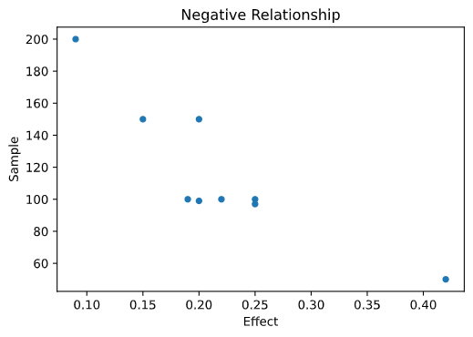
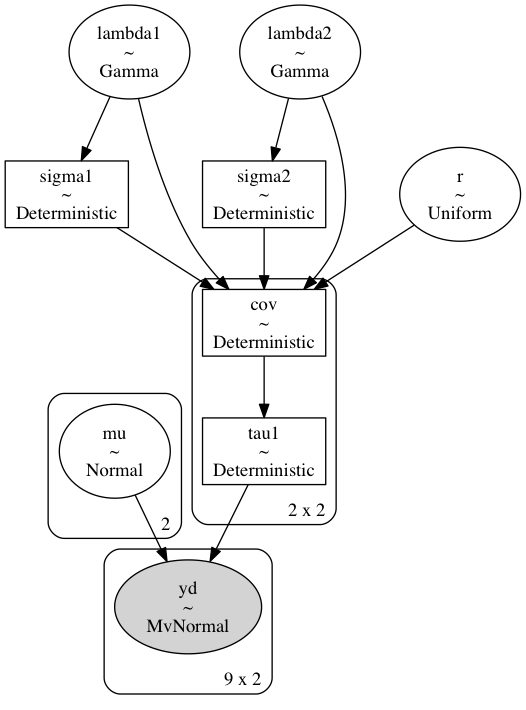
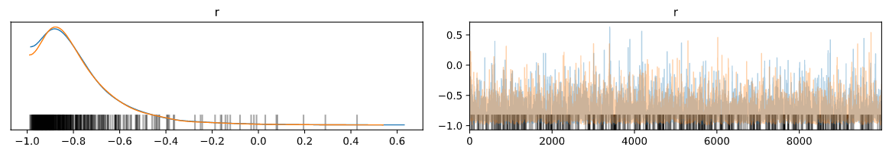
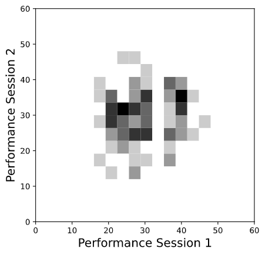
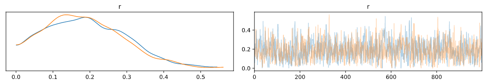

Daryl Bem did not literally explode peoples brains, but his proofs of the possibility shook psychology to the core. In a short and precise paper Feeling the Future Bem set out to show that there was good evidence for the existence of human pre-cognition. Paradoxical as it sounds he succeeded. His research coincided with the burgeoning realisation that there was a replication crisis in psychology, yet he presented his work as invitation to further replication. A tension between careful rigour and fantastical speculation characterised the work, provoking anxiety in others that spurred better explanations and increased rigour in the psychological sciences.
A Flavour of the Rigour
We won’t delve into each of the experiments, but it’s worth recalling something of the attention to detail and Bem’s effort to avoid easy refutation. Fundamentally his methods mirror the best practice of the day. He chooses an experimental paradigm of accepted research and adapts or invert it to test for the presence of psi, the catch all term denoting foresight and pre-cognitive ability. The most evocative of these experiments asked 100 participants to pick amongst two curtains where a picture will appear behind one of the two. The choice of curtain and the content of the picture was assigned in a random fashion, although a proportion of the pictures were selected to match the particpant’s sexual orientation. The theory was that some adaptive trait of the human organism would be primed to notice sexually stimulating possibilities in the near future. Success was measured against the benchmark of 50% accuracy.
The randomisation algorithm relied on a combination of methods using both software and a physical ramdomisation device to mitigate the risk that participants could either (i) intuit some pattern in the order of selection or (ii) manipulate the selection by psychokinesis. The randomising devices were then also run through the experiment to ensure that each guess achieved no greater accuracy than the benchmark 50%. Finally, each individual was measured on a scale of extraversion (a suspected correlate of psi) and tested. The results were tabulated and evaluated using standard parametric and non-parametric measures of statistical significance. The results showed a (technically) significant divergence from the null-hypothesis (53% accuracy) on the erotic stimuli, suggesting some evidence of pre-cognitive ability. The effect was pronounced in the extraverted participants who achieved 57% accurate predictions of where the image would be displayed. This was one of nine experiments he ran, of which eight returned suggestive evidence for psi
Did anything go wrong?
What if anything was Bem’s mistake? One diagnosis of the problem rests on the inherent weakness of hypothesis testing as a confirmatory device. The null-hypothesis mechanism aims to reject theories if the data is substantially incompatible with expectation. So phrased the burden of proof is massive. Even granting Bem his results, the nine experiments have to be weighed against the cumulative evidence of experience. With this constraint the evidence seems slight and is (at best) an invitation to replication. If we’re less generous we can question fine-graining of the results. Notice how specific the nature of the effect in particular group of people for a particular variety of stimuli. We can fairly wonder if the results hold up to replication but also how the results were achieved. What part of the data was obtained in process of exploration versus experiement? This is commonly called the file-drawer problem - so named for the speculative number of unsuccessful analyses that were filed away instead of published.
The emphasis on hypothesis testing and significant results leads to problems clearly outlined by Meehl , but there are more particular problems with Bem’s analysis nicely brought out by a Bayesian perspective on the data.
Bayesian Logic of Evidence
Following the presentation of Lee & Wagenmakers in their Bayesian Cognitive Modeling we consider some problems with Bem’s methods.
Early Stopping
The first suggestion is that the results may be due to a somewhat haphazard approach to ending an experiment. They posit that there is suspicious relationship between the sample size and observed effect size. The evaluation of the hypothesis is Bayesian - they seek to assess the probability of a correlation given the observed values i.e. Bem’s results:
\[ \overbrace{p(C | O)}^{posterior} = \dfrac{\overbrace{p( C )}^{prior}\overbrace{p(O | C)}^{likelihood}}{\underbrace{\int_{i}^{N} p(O |C_{i})}_{evidence}} \]
The observed values are suggestive of a relationship:

On the hypothesis that there is some artifact of Bem’s process either deliberate or unintentional that influences the data, we want to see what the data suggests is the most likely value for their correlation. A strong anti-correlation is suggestive that the sample sizes are picked when the results support Bem’s conclusion.
The Bayesian paradigm of reasoning is especially nice for this kind of problem as it forces you to express your prior credence in the question at hand. In this case we want to say what our beliefs about the correlation between effect size and sample size would be were we to condition on Bem’s observations. To incorporate our prior beliefs we build a generative model of our observed values as draws from a bivariate normal distribution with inverse gamma distributions over the variance terms and the correlation term \(r\) enters the model as:
\[ MvNormal([\mu_1, \mu_2], \begin{bmatrix} \sigma_1^{2} , & r\sigma_1\sigma_2 \newline r\sigma_1\sigma_2 & , \sigma_2^{2} \end{bmatrix}^{-1}) = MvNormal( \overrightarrow{\mu}, \Sigma^{-1} ) \]
We’ll set a fairly open ended flat prior allowing any possible value for correlation. Updating on the observed results will generate a view of the likely value. First look at the code, then we’ll unpack it a little.

This can be implemented efficiently using the PYMC3 package in python. The posterior distribution is constructed by looping over samples from the joint distribution of this system.
with pm.Model() as model1:
# r∼Uniform(−1,1) flat prior for correlation value
r = pm.Uniform("r", lower=-1, upper=1)
# μ1,μ2∼Gaussian(0,.001) priors for the bivaraite gaussian means
mu = pm.Normal("mu", mu=0, tau=0.001, shape=n2)
# σ1,σ2∼InvSqrtGamma(.001,.001) prior for the bivariate sigma terms
lambda1 = pm.Gamma("lambda1", alpha=0.001, beta=0.001)
lambda2 = pm.Gamma("lambda2", alpha=0.001, beta=0.001)
sigma1 = pm.Deterministic("sigma1", 1 / np.sqrt(lambda1))
sigma2 = pm.Deterministic("sigma2", 1 / np.sqrt(lambda2))
cov = pm.Deterministic(
"cov",
tt.stacklists(
[[lambda1 ** -1, r * sigma1 * sigma2], [r * sigma1 * sigma2, lambda2 ** -1]]
),
)
tau1 = pm.Deterministic("tau1", tt.nlinalg.matrix_inverse(cov))
# The liklihood term - distribution of parameter conditional on the data
yd = pm.MvNormal("yd", mu=mu, tau=tau1, observed=y)
trace1 = pm.sample()There is quite alot in that. The key points are to note that we are estimating the joint distribution of multiple parameters (\(\overrightarrow{\mu}, \Sigma\)) at once:
\[ p(\overrightarrow{\mu}, \Sigma | y) = \underbrace{p(\overrightarrow{\mu}) | \Sigma, y)}_{\text{conditional mean}}\cdot p(\Sigma | y) = \overbrace{p(\Sigma |\overrightarrow{\mu}, y)}^{\text{conditional cov}} \cdot p(\overrightarrow{\mu} | y) \]
In the case of estimating a normal distribution with unknown mean and unknown variance both conditional quantities need to be estimated, so it helps that the inverse Gamma distribution is conjugate prior distribution for \(\Sigma\). A conjugate prior relationship makes it easier to compute a posterior for particular families of probability distributions.
\[ \text{Conjugate Relation : } prior_{fam}^{f(x)} \mapsto_{likelihood} posterior_{fam}^{f(x + n)} \]
The bounded gamma variable is technically “improper” in that it can exceed 1, but taking the inverse squareroot transform is common practice to specify a conjugate prior for \(\Sigma\) in the multivariate normal distribution. The conjugate prior for \(\overrightarrow{\mu}\) is similarly a normally distributed variable.
\[ p(\overrightarrow{\mu} | y, \Sigma) \sim MvNormal(\overrightarrow{\mu}_{0}, \Sigma_{0}) \] \[ p(\Sigma | y , \overrightarrow{\mu}) \sim InvSqrtGamma(\alpha, \beta) \]
Using this fact we can iteratively sample from both the conditional distributions of both parameters based on the observations \(y\) and feed the sample values through the likelihood for function for the overall multivariate normal expressed as:
\[ p (y | \overrightarrow{\mu}, \Sigma) = (2 \pi)^{\frac{-2}{2}} \vert \Sigma \vert^{\frac{-1}{2}} exp\Big(-(y - \overrightarrow{\mu})^{'} \Sigma^{-1}(y - \overrightarrow{\mu})/2 \Big) \]
which in turn is used to calculate the posterior values of the joint parameters conditional on the data. This method is called Gibbs Sampling and constructs the posterior distribution from our data. The implementation of this process in Pymc3 allows us to recover the marginal distribution of the correlation coefficient \(r\) from the range of samples.
# Plot the marginal distribution of the correlation term
az.plot_trace(trace1, var_names=["r"])
The results decisively show that the data implies a strong relationship between effect size and sample size, that merits some suspicion.
Evidence for Psi
It’s one thing to question the methodological missteps of the paper, but it’s quite another thing to try and evaluate the basic claim of Bem’s paper. How does his evidence contribute to our belief in the occurence of psi. Even though he arrays a list of 9 experiments with suggestive evidence. It’s possible that each represents a statistical fluke - a better test for the existence of psi would involve measuring consistent performance over a number of trials. This is exactly what Wagenmaker’s research attempted when trying to replicate Bem’s results. He repeated Bem’s original experiments and another analogous task measuring performance on both both tasks. The darker the square, the more participants in the cross-section.

This plot does not suggest any strong relation between performance over the tests. Since we want to evaluate the correlation of performance on both tests, we would like to evaluate if the data suggests a positive correlation in the posterior distribution. Performance on the test is simply the count of correct answers for each participant on each experiment. We’ll model this as a Binomial distribution. As before we treat our observed guesses as driven by draws from a bivariate normal distribution which is “filtered” through a probit transform. A probit transform like the logistic transform converts a continuous variable into a symmetrical bi-furcated distribution which allows us to model our choices.
def phi(x):
# probit transform
return 0.5 + 0.5 * pm.math.erf(x / pm.math.sqrt(2))
with pm.Model() as model2:
# r∼Uniform(−1,1)
r = pm.Uniform("r", lower=0, upper=1)
# μ1,μ2∼Gaussian(0,.001)
mu = pm.Normal("mu", mu=0, tau=0.001, shape=n2)
# σ1,σ2∼InvSqrtGamma(.001,.001)
lambda1 = pm.Gamma("lambda1", alpha=0.001, beta=0.001, testval=100)
lambda2 = pm.Gamma("lambda2", alpha=0.001, beta=0.001, testval=100)
sigma1 = pm.Deterministic("sigma1", 1 / np.sqrt(lambda1))
sigma2 = pm.Deterministic("sigma2", 1 / np.sqrt(lambda2))
cov = pm.Deterministic(
"cov",
tt.stacklists(
[[lambda1 ** -1, r * sigma1 * sigma2], [r * sigma1 * sigma2, lambda2 ** -1]]
),
)
tau1 = pm.Deterministic("tau1", tt.nlinalg.matrix_inverse(cov))
thetai = pm.MvNormal("thetai", mu=mu, tau=tau1, shape=(n, n2))
theta = phi(thetai)
#likelihood
kij = pm.Binomial("kij", p=theta, n=Nt, observed=xobs)
trace2 = pm.sample()This looks like an analogous model, and in some respects it is, but note what the multivariate gaussian is modelling. In this model it’s an expression of the latent mental process that drives the performance each task. This flexibility is a virtue which emphasises the versatility of thinking through the underlying probabilistic phenomena. We have a suite of models apt to describe a range of processes if we’re creative enough to use them. More, we’ve been able to use these models to incorporate our information about the phenomena - the structure of the relationship and the admissable range of values.
“As soon as we look at the nature of inference at this many-moves-ahead level of perception, our attitude toward probability theory and the proper way to use it in science becomes almost diametrically opposite to that expounded in most current textbooks. We need have no fear of making shaky calculations on inadequate knowledge; for if our predictions are indeed wrong, then we shall have an opportunity to improve that knowledge, an opportunity that would have been lost had we been too timid to make the calculations. Instead of fearing wrong predictions, we look eagerly for them; it is only when predictions based on our present knowledge fail that probability theory leads us to fundamental new knowledge.” - E.T. Jaynes Bayesian Methods
Based on these results we should predict poor future performance since, as expected, the correlation between the performance on both tasks is very slight.
az.plot_trace(trace2, var_names=["r"])
Definitely not promising evidence of aptitude in the studied group.
Updating Belief: Always a Choice not a Necessity
But notice the way we’ve used the same updating mechanism in both cases but to different ends. In the first case we’ve updated on a flat prior and reasoned to the conclusion as a kind of reductio ad absurdum. We intuitively reject the hypothesis that effect size should be anti-correlated with sample size and when Bem’s results suggests the opposite, we take it as evidence against his theory. In the second case, more exploratory, we genuinely don’t know how the performance over the two tests should be related but for Bem’s results to stand they need to be positive. Conditioning on the experimental observations we learn what the expected correlation is to be and deny the presence of psi. Will Bem update his beliefs in the same manner? As with any argument we can always question the premises, but the Bayesian methodology has a simple consistency going for it. It’s an explicit and appealing form of analysis, which even if wrong is interesting for how it enables us to learn from the error.
Conclusion
Bem’s paper is an unsettling reminder that rigour comes in many forms and even witha good faith effort exactitude is not always enough to prevent error. In this case the Bayesian perspective provides a solid critique and proves itself a valuable lens with which to evaluate reliability of performance. More generally the explicit nature of Bayesian modelling and the careful manner in which you specify your prior expectations is appealing. Allowing for a more nuanced weighing of evidence than available through a simplistic binary of hypothesis testing.